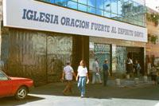
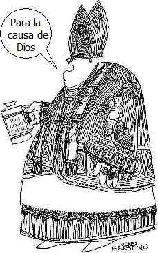
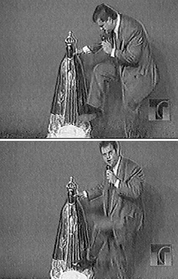
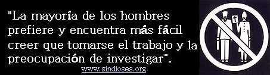

La Iglesia Universal del Reino de Dios fue fundada por Edir Macedo en Brasil durante 1977. Macedo, quien se autoproclamó ‘Obispo’, anteriormente había trabajado como cajero de la lotería del Estado de Río de Janeiro. Actualmente existen más de 2.000 templos en todo Brasil, con un promedio de 6 millones de miembros. La Iglesia esta en mas de 40 países (por todo América Latina, en algunas ciudades de Estados Unidos, Europa, Africa y Asia). Poseen, solo en Brasil, un Banco, dos periódicos, una revista, 30 emisoras de radio y la red televisiva TV Récord con 25 repetidoras en todo en el territorio. Desde hace varios años la Justicia y el gobierno del Brasil investigan a los lideres por presuntas vinculaciones con el Cartel de Cali y el lavado de dinero.
En 1990 instalaron el primer templo en Argentina. Hoy se han expandido por todo el territorio y han adquirido espacios en varias radios de todo el territorio argentino.
Inicios y doctrina
A los 20 años el joven Edir Macedo abandonó el catolicismo y se convirtió al pentecostalismo, ingresando a la iglesia Nova Vida. Permaneció allí durante 10 años antes de abandonarla por ‘elitista’. En 1977, junto a un grupo de amigos abrió un pequeño local en un barrio pobre de Río de Janeiro. Se declaró ‘Obispo’ y fundó la Iglesia Universal del Reino de Dios. En los primeros tiempos apenas sobrevivía económicamente hasta que una feligresa vendió un terreno y le donó el dinero. En ese momento compro 10 minutos por día en la radio Río Metropolitana. Comenzó el éxito.
Para 1980 tenia varias horas de radio y una hora de televisión en el canal Río Tupí. Abrió un local en la ciudad de San Pablo y para 1982 compró la primera emisora radial: Rio Copacabana-. Su carisma, falta de límites y el uso de técnicas de manipulación produjeron una explosión en su iglesia y un crecimiento imparable.
Para un observador no estudioso del fenómeno religioso, la Iglesia Universal parecería un grupo similar a otros evangélicos pentecostales. Por ejemplo creen en la deidad de Jesucristo, la Trinidad, la resurrección corporal de Jesucristo y la salvación por gracia a través de la fe. Sin embargo, el obispo Macedo incorporó nuevos elementos a su doctrina que poco tienen que ver con lo bíblico. Para sanarse venden ‘piedras de la tumba de Jesús’, ‘el agua bendita del río Jordán’, ‘la rosa milagrosa’, ‘sal bendecida por el Espíritu Santo’. Y como si esto fuera poco invitan a los fieles a participar de las reuniones y ‘comer el pan bendecido para curar enfermedades’.
Pero la doctrina central del Obispo Macedo es la lucha contra los demonios y la teología de la prosperidad:
Demonios y más demonios
La Iglesia Universal practica la liberación de demonios en los fieles. En todos sus templos se ora por la liberación de espíritus, tales como hechicería, adulterio, fornicación, celos, pleitos, envidias, borracheras, etc. En uno de sus libros el obispo Macedo dice: “Hay algunas enfermedades que caracterizan posesión(por el diablo): la neurosis, dolores de cabeza constantes, el insomnio, temor, desmayos, o ataques; deseos suicidas, las enfermedades que los doctores no pueden descubrir, vicios y depresión”. Y como si todo esto fuera poco culpa al demonio por la homosexualidad y el SIDA.
En el semanario oficial llamado Tribuna Universal puede leerse en la primera página: “SIDA, la epidemia de la década puede curarse si cree (en Jesús)”. En el interior del periódico cuentan que un angoleño, portador del virus mortal comenzó a participar de las sesiones de la Iglesia y que luego de una oración muy fuerte ‘sintió’ como el mal había sido arrancado de su cuerpo. Luego explican que el joven fue al médico y los síntomas habían desaparecidos.
Merece destacarse que todo este tipo de practicas y la culpa constante al diablo produce temor en los fieles y obediencia ciega a las autoridades de la Iglesia.
Dinero, dinero y más dinero
Desde un principio Edir Macedo copió de los predicadores norteamericanos la llamada teología de la prosperidad. Los fieles deben entregar sus diezmos para no ser conducidos a las garras de Satanás. Un pastor dice sin vacilar: “Hay una guerra adentro de cada uno de nosotros. Dios quiere que usted de, pero el diablo sostiene su billetera. Venga, venga ahora. Mañana usted podría estar muerto. Si usted no paga a Dios, usted paga al diablo”.
En la Iglesia Universal las reuniones duran aproximadamente dos horas con la mitad del tiempo dedicada a la Biblia y la otra mitad a recaudar dinero. Veamos otros ejemplos:
— Si quieres salir de la miseria, si quieres obtener un empleo, si quieres sanarte de una enfermedad debes aportar tu diezmo.
— Dios dijo: traed los diezmos. Cuando usted da su diezmo, Dios abre las ventanas del cielo y derrama bendiciones.
— El diezmo no es solo del sueldo, también de su jubilación o su pensión.
— Si no aportas tu diezmo el dinero va desapareciendo porque el demonio devorador ha entrado.
— Saquen todas las monedas que ustedes tienen. Yo no quiero sacar diez centavos. Eso no existe. Quiero todas las monedas porque ellas representan la miseria.
— Si diezmas consigues trabajo. El diezmo no es una donación es una devolución.
— Honra a Dios con tus bienes.
El tema de la recaudación de dinero ha sido sin lugar a dudas el gran invento-negocio de Macedo. A diferencia de otros cultos pentecostales que prometen a sus fieles la felicidad en el ‘mas allá’, Macedo asegura que Dios dará las gratificaciones de sus fieles aquí en la Tierra. De allí que si uno entrega mas dinero tendrá mas posibilidades de ser rico en esta vida. Macedo dice: “Yo no sigo a un Dios pobre. Si su Dios es pobre es porque sus pensamientos son pobres… La pobreza es del diablo; no de Dios”.
Un dato interesante es que no solamente la Iglesia Católica denuncia a la Iglesia Universal. Las Asociaciones Evangélicas del Brasil los han denunciado por “utilizar métodos manipulativos para obtener dinero”.
Martín Dreher, un prestigioso pastor luterano brasileño expresa que este grupo “es contrario a todo lo que uno se imagina como Iglesia, pues hay una mezcla de lo comercial con lo divino. La gracia y la comunicación dejan de ser temas centrales y también del pecado. Los demonios son culpables por todas las desgracias del mundo. La función de la Iglesia es ‘quebrar hechizos, con un lenguaje que se aproxima mucho a los cultos afro-amerindios”.
Un imperio político-económico-religioso
En los suplementos económicos de los diarios brasileños se pueden leer este tipo de noticias, sorpresivas para los argentinos,: “La Iglesia Universal factura mas que Autolatina: En un año la Iglesia tuvo una ganancia de 735 millones de dólares mientras que Autolatina solo 337 millones, siendo la mejor empresa privada del país.”
En menos de 20 años, Edir Macedo convirtió un pequeño local alquilado de un barrio humilde de Río de Janeiro en el más grande brasileño multinacional. Hoy la Iglesia Universal cuando con 6 millones de fieles y 1.000 millones de ingreso anual que produce, libre de impuestos, sus 3.000 templos distribuidos mayoritariamente en Brasil y en 46 países de todo el mundo.
Preguntarse de donde sale el dinero es fácil de responder. La Iglesia Universal cuenta en todos sus templos, mas de 2.000 solo en Brasil, con cinco cultos por día donde los fieles son incentivados a donar su diezmo. Macedo ha organizado su empresa en forma piramidal, él es el dueño, lo siguen un grupo selecto de obispos, que discuten dos veces por año las políticas ha seguir, y más de 7.000 pastores que cobran un sueldo de 700 dólares, reciben una casa y un auto cuando pastorean mas de un templo. Lo que se dice un negocio redondo.
Quienes conocen al Obispo Macedo dicen que su sueño es convertir al Brasil en un estado religioso y gobernar con mano dura y mesiánica. El trata de desmentirlo al señalar que “Dios me eligió para predicar el Evangelio al pobre en el espíritu, para liberar a los oprimidos por el diablo y anunciar el perdón de Jesucristo”. Lo concreto es que Macedo concentra su capital, además de sus templos, en ser el dueño más importante de medios de comunicación. Es el propietario de dos periódicos con más de un millón de ejemplares, de 30 emisoras de radio y de la segunda red de televisión más importante del Brasil.
En 1989, inesperadamente compró la tradicional cadena de televisión TV Récord con 25 repetidoras en todo el país. En un principio la cadena televisiva se convirtió en un púlpito de 24 horas y muchos creyeron que seria el final de su experiencia televisiva. Pero al poco tiempo contrató un servicio de noticias independiente, adquirió los mejores filmes de Estados Unidos y obtuvo los derechos de televisación del San Pablo, uno de los equipos del fútbol mas populares. Hoy se ha convertido en una rival de la famosa red Globo. Por otra parte en el exterior ha comprado y contratado emisoras en Portugal, Mozambique y Argentina.
No conforme con sus negocios religiosos-televisivos, el obispo Macedo decidió incursionar en la política partidaria. La actividad comenzó en 1986 cuando patrocinó varios candidatos a diputados que le prometieron beneficios para la Iglesia. Hoy la Iglesia Universal presenta sus propios candidatos y en las ultimas elecciones logro 34 diputados y se consolidó como la fuerza evangelica mas importarte de la Camara de Diputados en Brasil. El proyecto político de Macedo es muy serio. La consigna es Hermano, vota por hermanos. Para su triunfo político no escatima esfuerzos. Solo en San Pablo distribuye mas de un millón y medio de alimentos.
Para el sociólogo brasileño Alexandre Fonseca existen varios motivos para que los fieles no duden en votar los candidatos de la Iglesia Universal, pero sobre todo sobresale la idea de que son perseguidos. El mismo Macedo decía en un acto masivo en el Maracaná: “Nos persiguen porque estamos en el camino cierto. Tenemos que escoger de acuerdo con aquellos que nos van a ayudar. Los otros nos persiguen, la Iglesia Católica nos persigue”. Por otro lado no debemos olvidarnos que en esta secta donde conviven el fanatismo, la ignorancia y la alienación es mas sencillo presionar a los adeptos que voten a los propios candidatos ya que viven bastante aislados de la sociedad real. Macedo les pide a sus fieles que se aíslen del mundo: “busca la amistad entre la gente de la misma fe y evita cualquier charla o contacto que pueda comprometer tu salvación”.
A mediados de 1990 la Justicia brasileña comenzó a investigar al Obispo Macedo y los negocios de la Iglesia Universal. En 1992 terminó preso durante 12 días acusado de defraudación y malversación ya que su cuenta bancaria había acumulado mas de 100 millones de dólares. Al final sus abogados lograron la absolución en el proceso judicial.
En 1995, Carlos Magnos de Miranda, un obispo disidente de la Iglesia Universal, relató que narcotraficantes colombianos habían entregado en 1989 varios millones de dólares para la compra de TV Récord, la cadena televisiva; que Macedo utilizaba la Iglesia para el lavado de dinero del Cartel de Cali y utilizaba un doble contabilidad para evadir al fisco. Las declaraciones produjeron un gran revuelo en la sociedad brasileña. La Justicia comenzó a investigar a Macedo por fraude fiscal, extorsión a sus fieles para obtener contribuciones y lazos con el narcotrafico. El juez Guillermo Calmon allanó 12 locales de la secta y ordeno levantar el secreto bancario de las empresas y de los lideres de la Iglesia Universal.
Paralelamente, la red televisiva Globo aprovecho para darle el golpe final a la Iglesia Universal. Mostró en la pantalla, una y otra vez, imágenes del obispo Macedo enseñándole a sus pastores a pedir dinero: ¿Entienden cómo es? Si quieren ayudar, bien. Si no, pueden irse al infierno. O contribuyen o se condenan. En otra escena se lo ve a Macedo y otros pastores en cuclillas sobre un montón de billetes.
Pero faltaba la gota que rebasaría el vaso. La red Globo obtuvo un vídeo donde se observa en el escenario de un templo a un pastor de la Iglesia Universal del Reino de Dios pateando y rompiendo en pedazos la figura de la patrona del Brasil, Nuestra Señora de Aparecida. Ante la gravísima situación que irritó a millones de católicos brasileños y que anunciaba una guerra santa, la Confederación Nacional de Obispos (CNBB) pidió a los fieles no responder los ataques y solo realizar actos de desagravio a la patrona del Brasil. Paralelamente Macedo, desde su residencia en los Estados Unidos, pidió disculpas a la grey católica justificando la juventud del pastor, aunque su respuesta no fue muy creíble ya que en otros discursos ha señalado: “No somos locos ni idiotas para venerar una imagen de madera, metal o piedra”.
En la Argentina
La Iglesia Universal del Reino de Dios llegó a la Argentina en 1990. En un principio se instalaron más activamente en el interior del país, especialmente en las provincias del Norte y la capital de Córdoba. Cuando se consolidaron empezaron una actividad agresiva en Capital y Gran Buenos Aires con la apertura de gran cantidad de templos.
En octubre 1995 el Obispo Macedo viajó a Buenos Aires e inauguró un moderno edificio de cinco plantas ubicado en Avenida Rivadavia 7258, a pocas cuadras de la plaza Flores. Por otra parte en el microcentro abrieron un local en la peatonal Lavalle al 940. A partir del crecimiento masivo en el país compraron las 24 horas de programación de Radio Argentina, una AM con llegada a todo el territorio nacional. La radio tiene un formato similar a las emisoras brasileñas donde se promocionan las actividades de la Iglesia Universal. La conducción de los programas la realizan pastores brasileños que hablan portuñol. Los títulos de los programas son similares: Punto de Fe, Pare de Sufrir, Línea Directa, Milagros de Fe, etc. En todos se pasan testimonios de fieles que han vencido al demonio o que gracias al diezmo son personas felices. La emisora no tiene casi publicidad. Merece recordarse que el CONFER no autoriza por ley que ningún grupo religioso extranjero obtenga una licencia.
A mediados de 1995, la Iglesia Universal había comprado el cierre de transmisión de Canal 9 pero el escándalo del lavado de dinero en Brasil llevó a que las autoridades de la emisora levantaran el ciclo.
En enero de 1996 el Registro Nacional de Cultos a cargo del Dr. Angel Centeno paralizó la apertura de seis nuevos locales y las radicaciones de pastores brasileños debido al agravio sufrido por otra religión, en este caso la católica, por la destrucción de la imagen de la virgen María. Cuatro meses después la situación se regularizó cuando los responsables de Argentina pidieron disculpas por lo sucedido en Brasil. Actualmente residen en el país aproximadamente 20 pastores de origen brasileño.
Paralelamente a la actuación del Registro de Cultos, el Juzgado Federal N° 3 a cargo del juez Ballesteros los investigó de oficio por el supuesto delito de lavado de dinero, sin que se pudiera obtener pistas concretas.
Nota del Editor: La imagen que muestra al obispo Edir Macedo en la cárcel y a un pastor destruyendo una imagen católica fueron obtenidas del sitio de la Sociedad de la Tierra Redonda, http://www.str.com.br/Str/demonios.htm
Volver a la sección Examinando las religiones
Comentarios
Comments powered by Disqus